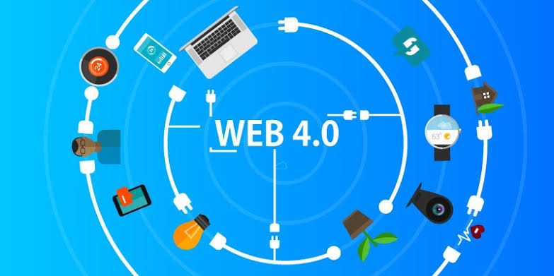

Web 4.0, the Symbiotic Web, represents the next stage in Internet evolution. In this stage, artificial intelligence (AI), machine learning, and connected devices converge to create a seamless and highly intuitive digital ecosystem. Web 4.0 focuses on interconnecting humans, machines, and systems, enabling smarter, more autonomous interactions and hyper-personalized experiences.
